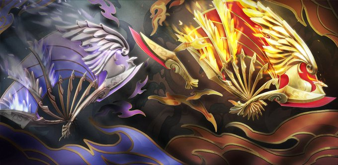

Valorant: Se lanza un cuchillo exclusivo de China, "Ignite Fan", para los fanáticos
Riot Games ha anunciado el lanzamiento de un nuevo cuchillo exclusivo para la región de China en su popular juego de disparos táctico, Valorant. El cuchillo, llamado "Ignite Fan", ha sido diseñado especialmente para los fanáticos chinos del juego y promete ser un objeto codiciado dentro de la comunidad.
"Ignite Fan" presenta un diseño único inspirado en la rica cultura y la pasión de los jugadores chinos. El cuchillo cuenta con detalles impresionantes, como una empuñadura ornamentada con grabados intrincados y una hoja brillante que refleja los colores vibrantes asociados con Valorant. Este cuchillo exclusivo es un tributo a la dedicación de la comunidad china y su apoyo continuo al juego.
Para obtener el cuchillo "Ignite Fan", los jugadores de la región de China tendrán la oportunidad de participar en eventos especiales dentro del juego. Estos eventos podrían incluir desafíos y competiciones que les permitirán desbloquear el cuchillo y agregarlo a su colección personal. La expectativa en la comunidad es alta, ya que los jugadores están ansiosos por obtener este artículo exclusivo.
Riot Games ha expresado su gratitud hacia la comunidad de jugadores en China y ha destacado su importancia para el crecimiento y el éxito continuo de Valorant. La introducción del cuchillo "Ignite Fan" es un gesto de aprecio hacia los fanáticos chinos y su dedicación a lo largo de los años.
Aunque el cuchillo "Ignite Fan" está diseñado específicamente para la región de China, los fanáticos de otras partes del mundo también están siguiendo de cerca este lanzamiento. Existe la posibilidad de que Riot Games considere lanzar artículos exclusivos similares en otras regiones en el futuro, lo que sería una excelente noticia para los jugadores de Valorant de todo el mundo.
Volver a la página principal